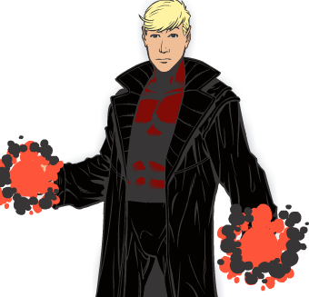
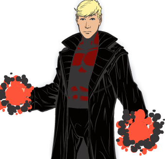

After a pill that is considered to save lifes and higher cell count for a new disease that has been spreading around the world, Kyle Mckinely soon takes the pill that completely alters his cells causing his body to increase in stability, as well as increasing his brain cells causing him to experience powers like never before in the form of telekinesis, but as his fame of being a superhero causes his friend to get increasingly jealous, in an attempt to be the one and only savior of Stonespell city and prove superiority, even if the intentions of his powers are NO good..
JUNE 2016
 
